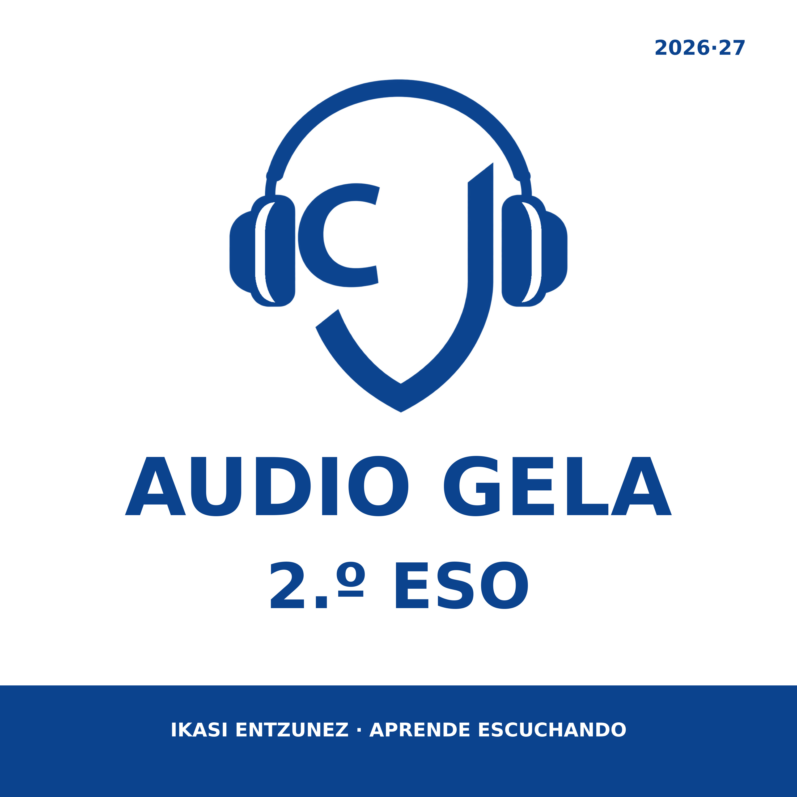

Podcast educativo · Curso 2026/27
AUDIO
GELA
Escucha, repasa y practica los contenidos de 2.º ESO. Todo está organizado por asignatura, idioma, unidad y tema.
Asignaturas
Selecciona una asignatura y despliega el tema que quieras estudiar.
Historia1 unidad · 6 episodios1 disponible · EUS próximamente
CASTCastellano6 episodios disponibles
Unidad 1 · La Edad Media6 temas
T01Cómo comenzó la Edad MediaDel Mare Nostrum a la caída del Imperio romano de Occidente.8:12
Del Mare Nostrum a la caída del Imperio romano de Occidente.
Autoevaluación interactivaAutoevaluación imprimibleCinco intensidades, 20 preguntas disponibles por nivel y una autoevaluación imprimible combinada.
T02El Imperio bizantinoLa continuidad romana en Oriente y su evolución cultural y religiosa.8:06
La continuidad romana en Oriente y su evolución cultural y religiosa.
Autoevaluación interactivaAutoevaluación imprimibleCinco intensidades, 20 preguntas por nivel y una autoevaluación imprimible combinada.
T03Los reinos germánicosLa transformación política, social y económica de Europa occidental.8:10
La transformación política, social y económica de Europa occidental.
Autoevaluación interactivaAutoevaluación imprimibleCinco intensidades, 20 preguntas por nivel y una autoevaluación imprimible combinada.
T04El reino visigodoLa creación del reino de Toledo y su caída en el año 711.7:31
La creación del reino de Toledo y su caída en el año 711.
Autoevaluación interactivaAutoevaluación imprimible5 intensidades · 20 preguntas por nivel · autoevaluación imprimible combinada.
T05El Imperio carolingioCarlomagno, la organización imperial y el Tratado de Verdún.8:04
Carlomagno, la organización imperial y el Tratado de Verdún.
Autoevaluación interactivaAutoevaluación imprimiblePráctica interactiva y ejercicios escritos con soluciones separadas.
T06Nacimiento y expansión del islamArabia, Mahoma, la Hégira, la expansión y los cinco pilares.8:02
Arabia, Mahoma, la Hégira, la expansión y los cinco pilares.
Autoevaluación interactivaAutoevaluación imprimiblePráctica interactiva y ejercicios escritos con soluciones separadas.
EUSEuskaraPreparado para añadir audios, test y fichasPróximamente
Añadir AUDIO GELA a la aplicación Podcasts
- Abre Podcasts y entra en Biblioteca.
- Pulsa ··· y elige Seguir un programa por URL.
- Copia y pega la dirección siguiente.
https://xtronzio.github.io/audiogela-2eso-2026-27/feed.xml